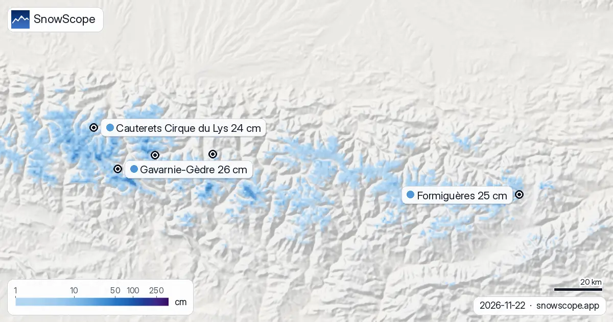

Where is the deepest snow in the Pyrenees? Gavarnie-Gèdre, with 26 cm (22 November)
Where is the deepest snow in the Pyrenees today? If you want the most snow in the Pyrenees today, look at Gavarnie-Gèdre (France): about 26 cm up high. After it come Formiguères (25 cm) and Cauterets Cirque du Lys (24 cm). Across the region, 44 of 53 resorts in the Pyrenees have snow up high today, and our model finds 3,460 km² of white ground. In the field we always carry a probe; numbers like these tell you where to go, the probe tells you what is under your skis.
See the live snow forecast for Gavarnie-Gèdre in the SnowScope appSnow depth, powder alerts and the 3D map, free.
Snow on the slopes today
The snow has spread since 20 November, from 1,570 km² to 3,460 km² today; for 25 November our forecast gives 9,560 km².
| Resort | Snow depth | New snow, 72 h | Coming, next days | Top |
|---|---|---|---|---|
| Gavarnie-Gèdre | 26 cm | 10 cm | 14 cm | 2,283 m |
| Formiguères | 25 cm | 4 cm | 7 cm | 2,305 m |
| Cauterets Cirque du Lys | 24 cm | 14 cm | 26 cm | 2,420 m |
| Peyragudes | 19 cm | 6 cm | 9 cm | 2,360 m |
| Piau-Engaly | 17 cm | 13 cm | 14 cm | 2,527 m |

What to expect next
Between now and 25 November we expect 26 cm at Cauterets Cirque du Lys, 14 cm at Gavarnie-Gèdre and 14 cm at Piau-Engaly.
On 23 November the freezing level at Gavarnie-Gèdre climbs to 1,990 m to 2,950 m, higher than the top of the lifts (2,283 m): expect rain or wet snow on every slope.
Forecasts a few days ahead can change: look at the map again the day before you travel.
What the stations saw
On 21 November, the Boí (2.537 m) station (2,537 m) measured 9 cm on the ground, including 3 cm of new snow in 24 hours. On 21 November, the Núria (1.971 m) station (1,971 m) measured 6 cm on the ground. At the Das - Aeròdrom station (1,096 m), the measured snow on the ground was 3 cm on 21 November.
Our resort numbers are estimates for the upper slopes. The station numbers are real measurements, but only at one point and on the date shown.
Against other winters
At Gavarnie-Gèdre, the ground at 2,050 m is still bare today, while 4 cm is usual for the date. Only 11 of the past 46 winters had as little.
Nothing unusual at Formiguères: 3 cm at 2,021 m today, more than in 21 of the past 46 winters, with 3 cm as the usual.
A slow start at Cauterets Cirque du Lys: at 2,072 m our model shows just 1 cm, below the usual 7 cm; on 22 November, only 9 of the past 46 winters had less.
Tips for skiers
- Snow on the map does not mean a resort is open: check lifts and opening dates on the resort's website.
- Early-season snow is thin. Stay on open, groomed pistes: rocks and grass can hide just under the surface.
- South-facing slopes take the most sun and melt first; high, north-facing slopes keep their snow the longest.
- Before you ski off-piste or go touring, read the official avalanche bulletin (links below).
- Get a powder alert in the SnowScope app to know when Gavarnie-Gèdre gets fresh snow.
About these numbers
Resort snow depths are the deepest snow on the resort's upper slopes from the SnowScope snow model (about 1 km, run of 22 November); they are estimates for an area, not a measurement at one point. Station values are measurements on the date shown. Forecasts can change. Always read the official avalanche bulletin before going off-piste.
Official avalanche bulletins: Météo-France / Meteocat / AEMET
Cite this report
For research, teaching or the press: the numbers and charts are free to reuse under CC BY 4.0 with this citation.
SnowScope (2026), Where is the deepest snow in the Pyrenees? Gavarnie-Gèdre, with 26 cm (22 November), https://snowscope.app/blog/en/2026/11/pyrenees-gavarnie-gedre-snow-depth-today-22-november-2026.html, accessed 2026-11-22
SnowScope (Atlas Labs). (2026, November 22). Where is the deepest snow in the Pyrenees? Gavarnie-Gèdre, with 26 cm (22 November). SnowScope snow reports. https://snowscope.app/blog/en/2026/11/pyrenees-gavarnie-gedre-snow-depth-today-22-november-2026.html
BibTeX
@misc{snowscope2026pyreneesgavarniegedresno,
author = {{SnowScope (Atlas Labs)}},
title = {Where is the deepest snow in the Pyrenees? Gavarnie-Gèdre, with 26 cm (22 November)},
year = {2026},
month = nov,
howpublished = {\url{https://snowscope.app/blog/en/2026/11/pyrenees-gavarnie-gedre-snow-depth-today-22-november-2026.html}},
note = {Published 2026-11-22 10:48 UTC; accessed 2026-11-22}
}· CC BY 4.0 · Methods, data and tools →
Gavarnie-Gèdre: snow and temperature by height, this winter vs last (tools) →
Follow Gavarnie-Gèdre
Free: a message when fresh snow is coming, and the forecast every morning.
More snow reports

How long the Pyrenees stayed white each winter since 2000-01, seen by satellite, and snow depth at 10 long-running stations. Three thin winters in a row ended in 2025-26; this autumn has started normally.

Piau-Engaly leads the forecast with 37 cm of new snow by 13 November; 24 cm is expected on 12 November.

Port del Comte in the pre-Pyrenees of Lleida: usual snow depth from 46 past winters at the base, mid-mountain and the top, month by month, why the natural cover is thin, and how to time a day trip.